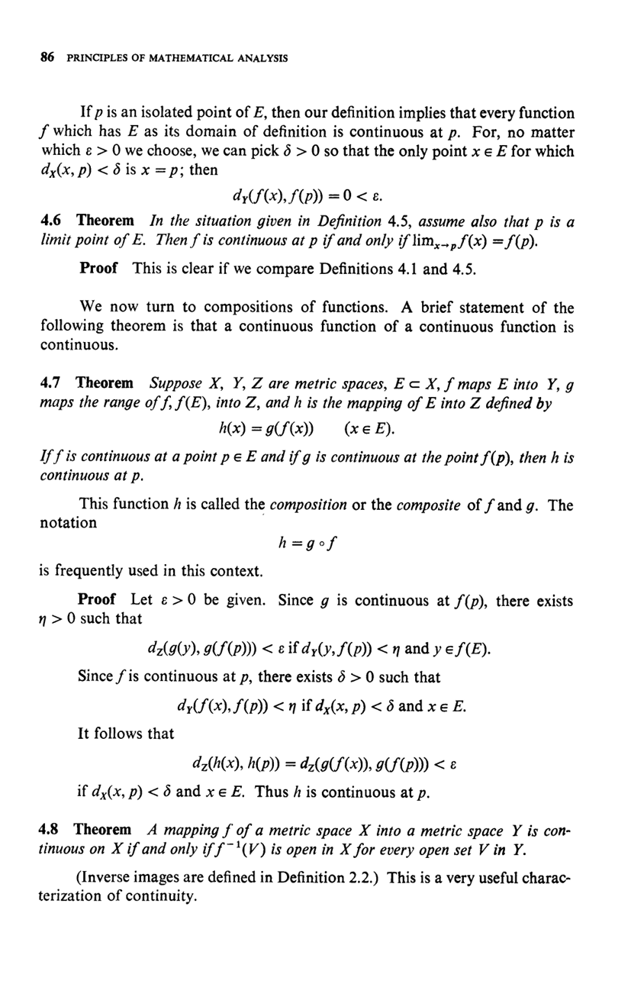

<p>If <i>p</i> is an isolated point of <i>E</i>, then our definition implies that every function <i>f</i> which has <i>E</i> as its domain of definition is continuous at <i>p</i>. For, no matter which <i>ε > 0</i> we choose, we can pick <i>δ > 0</i> so that the only point <i>x ∈ E</i> for which <i>d<sub>X</sub>(x, p) < δ</i> is <i>x = p</i>; then</p> <p style="text-align: center;"><i>d<sub>Y</sub>(f(x), f(p)) = 0 < ε</i>.</p> <h4>4.6 Theorem</h4> <p>In the situation given in Definition 4.5, assume also that <i>p</i> is a limit point of <i>E</i>. Then <i>f</i> is continuous at <i>p</i> if and only if <i>lim<sub>x→p</sub> f(x) = f(p)</i>.</p> <p><strong>Proof</strong> This is clear if we compare Definitions 4.1 and 4.5.</p> <p>We now turn to compositions of functions. A brief statement of the following theorem is that a continuous function of a continuous function is continuous.</p> <h4>4.7 Theorem</h4> <p>Suppose <i>X, Y, Z</i> are metric spaces, <i>E ⊂ X</i>, <i>f</i> maps <i>E</i> into <i>Y</i>, <i>g</i> maps the range of <i>f</i>, <i>f(E)</i>, into <i>Z</i>, and <i>h</i> is the mapping of <i>E</i> into <i>Z</i> defined by</p> <p style="text-align: center;"><i>h(x) = g(f(x))</i> (<i>x ∈ E</i>).</p> <p>If <i>f</i> is continuous at a point <i>p ∈ E</i> and if <i>g</i> is continuous at the point <i>f(p)</i>, then <i>h</i> is continuous at <i>p</i>.</p> <p>This function <i>h</i> is called the <i>composition</i> or the <i>composite</i> of <i>f</i> and <i>g</i>. The notation</p> <p style="text-align: center;"><i>h = g ∘ f</i></p> <p>is frequently used in this context.</p> <p><strong>Proof</strong> Let <i>ε > 0</i> be given. Since <i>g</i> is continuous at <i>f(p)</i>, there exists <i>η > 0</i> such that</p> <p style="text-align: center;"><i>d<sub>Z</sub>(g(y), g(f(p))) < ε</i> if <i>d<sub>Y</sub>(y, f(p)) < η</i> and <i>y ∈ f(E)</i>.</p> <p>Since <i>f</i> is continuous at <i>p</i>, there exists <i>δ > 0</i> such that</p> <p style="text-align: center;"><i>d<sub>Y</sub>(f(x), f(p)) < η</i> if <i>d<sub>X</sub>(x, p) < δ</i> and <i>x ∈ E</i>.</p> <p>It follows that</p> <p style="text-align: center;"><i>d<sub>Z</sub>(h(x), h(p)) = d<sub>Z</sub>(g(f(x)), g(f(p))) < ε</i></p> <p>if <i>d<sub>X</sub>(x, p) < δ</i> and <i>x ∈ E</i>. Thus <i>h</i> is continuous at <i>p</i>.</p> <h4>4.8 Theorem</h4> <p>A mapping <i>f</i> of a metric space <i>X</i> into a metric space <i>Y</i> is continuous on <i>X</i> if and only if <i>f<sup>-1</sup>(V)</i> is open in <i>X</i> for every open set <i>V</i> in <i>Y</i>.</p> <p>(Inverse images are defined in Definition 2.2.) This is a very useful characterization of continuity.</p>